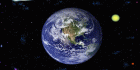

Современные Загадки Планеты Земля

Земля — третья планета от Солнца, самая большая по величине и плотности и массе среди землеподобных планет Солнечной системы. Наша планета является единственной известной планетой во Вселенной, населённой живыми существами. Учённые установили, что Земля образовалась приблизительно 4,54 млрд. лет назад из дискообразной массы газа и космической пыли, оставшейся после формирования Солнца.
Изначально наша планета была расплавленной массой. Позже в атмосфере Земли начала накапливаться вода и поверхность затвердела. Падающие на Землю кометы приносили с собой лёд и воду и формировали океаны. За миллиарды лет астероиды существенно изменяли климат и рельеф нашей планеты.
Единственный спутник Земли — Луна — появился предположительно в результате касательного столкновения нашей планеты с небесным телом, по размерам близким Марсу. Часть этого астероида осталась на Земле, а часть была выброшена в околоземное пространство и образовала кольцо мелких астероидов, со временем давшее начало Луне. В наши дни Луна является причиной приливов и даже потихоньку замедляет вращение планеты.
В результате фотосинтеза в атмосфере Земли начал накапливаться кислород. Разнообразные слияния мелких клеток с крупными дало начало развитию сложных клеток (эукариотов). В свою очередь многоклеточные организмы, начал всё больше и лучше приспосабливаться к окружающим условиям существования. Благодаря озоновому слою, который поглощал ультрафиолетовое излучение, жизнь смогла выйти из океанов на поверхности Земли.
На протяжении миллионов лет поверхность нашей планеты постоянно изменялась, появлялись континенты. Они постоянно находились в движении и иногда соединялись в суперконтинент. Примерно 750 миллионов лет назад, старейший из суперконтинентов – Родиния, разделился на несколько частей и 600-540 млн. лет назад объединился в новый суперконтинент Паннотию, а позже в последний суперконтинент – Пангею, который начал раскалываться 180 миллионов лет назад.
Более семидесяти процентов поверхности Земли покрыто морями и океанами, остальную часть поверхности планеты занимают острова и континенты. Земная кора поделена на несколько тектонических плит, которые перемещаются по поверхности планеты в течение сотен миллионов лет.
Диаметр нашей планеты приблизительно равен 12742 км. Форма Земли вовсе не шар как считают многие, а эллипс – овал с широкой частью на экваторе. Вращение планеты создало экваториальную выпуклость, поэтому диаметр экватора на 43 километра больше, чем диаметр между полюсами планеты.
Самой высокой точкой нашей планеты является гора Эверест (8848 метров над уровнем моря), а самой низкой точкой является — Марианская впадина (10 911 м под уровнем моря). Но из-за выпуклой формы экватора, высочайшей точкой поверхности от центра планеты фактически считается вершина вулкана Чимборасо в Эквадоре.
- | Строение Солнечной системы.
- | Планеты Солнечной системы.
- | Строение атмосферы Земли.
- | Строение Земли.
- | Тунгусский метеорит.
- | Башня дьявола.
- | Вавилонская башня.
- | Вода и жизнь на Земле..
- | Загадки Наска.
- | Загадки Аксума..
- | Колымский тракт.
- | Загадки мексиканской пустыни.
- | Маяк смерти.
- | Море дьявола.
- | Остров Пасхи.
- | Остров Пасхи - моаи.
- | Пирамиды Кауачи.
- | Пирамиды Копана.
- | Пирамиды в Европе.
- | Пирамиды Китая.
- | Пирамиды Египта.
- | Пирамиды Тибета.
- | Пирамиды в Дахшуре.
- | Пирамиды на Марсе.
- | Сахара.
- | Шамбала_1.
- | Шары - послания.
- | Подземный мир .
- | Полая Земля |.